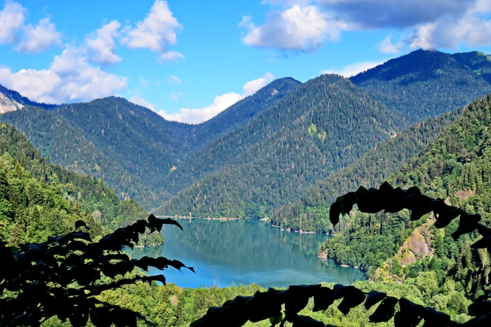

Горный туризм: восхождение для новичков и бывалых
 
Что такое трекинг? В переводе с английского слово "треккинг" означает передвижение или переход по горной (пересечённой) местности. Соответственно, коммерческие треккинговые маршруты часто имеют цель - базовый лагерь той или иной известной вершины, главная из которых - Эверест.
Однако для миллионов искателей приключений, с середины шестидесятых годов посетивших Непал и Тибет, понятие треккинга имеет куда более яркое и емкое значение. Замечательно об этом сказал один известный англичанин: "Трекинг - это общий знаменатель жизни в Гималаях... Здесь в пути каждый находит свой стиль, свое кредо..." Чтобы попытаться понять эти слова, мы просто опишем один из типичных дней гималайского трекинга.